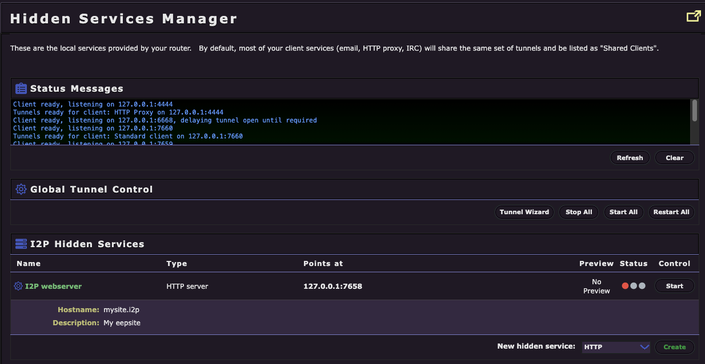
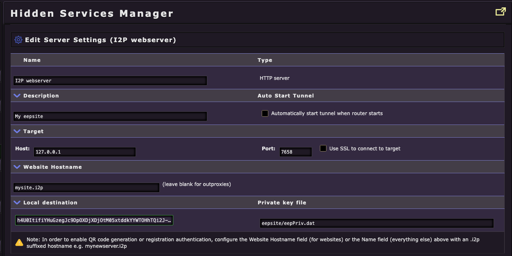
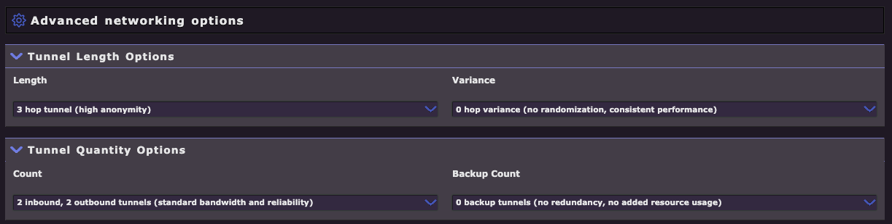
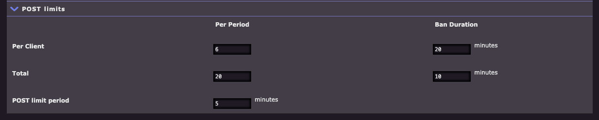
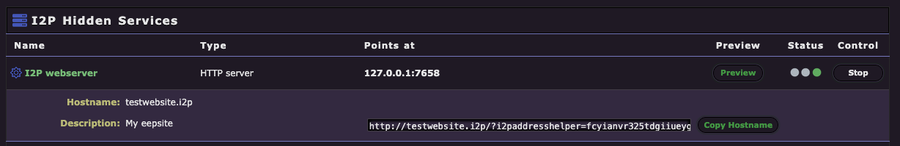
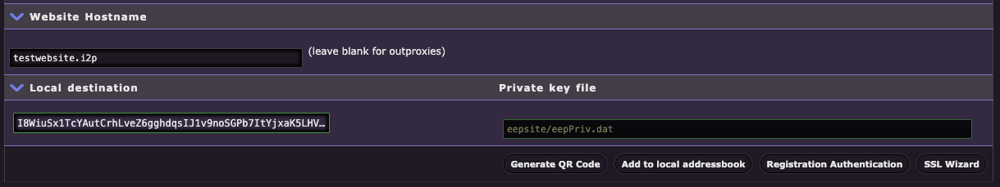
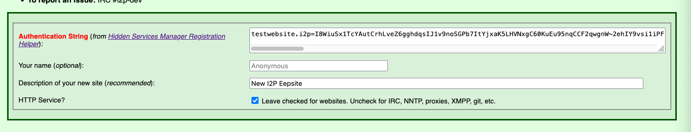
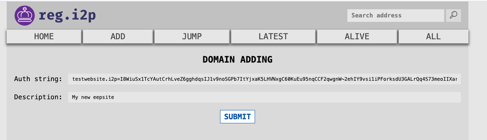

What is an Eepsite?
An eepsite is a website that lives exclusively on the I2P network. Unlike traditional websites accessible through the clearnet, eepsites are only reachable through I2P, providing anonymity and privacy for both the site operator and visitors. Eepsites use the .i2p pseudo-top-level domain and are accessed through special .b32.i2p addresses or human-readable names registered in the I2P address book.
All Java I2P deployments come with Jetty, a lightweight Java-based webserver, pre-installed and pre-configured. This makes it simple to start hosting your own eepsite within minutes - no additional software installation required.
This guide will walk you through the process of creating and configuring your first eepsite using I2P’s built-in tools.
Step 1: Access the Hidden Services Manager
The Hidden Services Manager (also called the I2P Tunnel Manager) is where you configure all I2P server and client tunnels, including HTTP servers (eepsites).
- Open your I2P router console (typically at http://127.0.0.1:7657)
- Navigate to the Hidden Services Manager at http://127.0.0.1:7657/i2ptunnelmgr
You should see the Hidden Services Manager interface showing:
- Status Messages - Current tunnel and client status
- Global Tunnel Control - Buttons to manage all tunnels at once
- I2P Hidden Services - List of configured server tunnels

By default, you’ll see an existing I2P webserver entry configured but not started. This is the pre-configured Jetty webserver ready for you to use.
Step 2: Configure Your Eepsite Server Settings
Click on the I2P webserver entry in the Hidden Services list to open the server configuration page. This is where you’ll customize your eepsite’s settings.

Configuration Options Explained
Name
- This is an internal identifier for your tunnel
- Useful if you’re running multiple eepsites to keep track of which is which
- Default: “I2P webserver”
Description
- A brief description of your eepsite for your own reference
- Only visible to you in the Hidden Services Manager
- Example: “My eepsite” or “Personal blog”
Auto Start Tunnel
- Important: Check this box to automatically start your eepsite when your I2P router starts
- Ensures your site remains available without manual intervention after router restarts
- Recommended: Enabled
Target (Host and Port)
- Host: The local address where your webserver is running (default:
127.0.0.1) - Port: The port your webserver listens on (default:
7658for Jetty) - If you’re using the pre-installed Jetty webserver, leave these at default values
- Only change if you’re running a custom webserver on a different port
Website Hostname
- This is your eepsite’s human-readable
.i2pdomain name - Default:
mysite.i2p(placeholder) - You can register a custom domain like
stormycloud.i2pormyblog.i2p - Leave blank if you only want to use the auto-generated
.b32.i2paddress (for outproxies) - See Registering Your I2P Domain below for how to claim a custom hostname
Local Destination
- This is your eepsite’s unique cryptographic identifier (destination address)
- Auto-generated when the tunnel is first created
- Think of this as your site’s permanent “IP address” on I2P
- The long alphanumeric string is your site’s
.b32.i2paddress in encoded form
Private Key File
- Location where your eepsite’s private keys are stored
- Default:
eepsite/eepPriv.dat - Keep this file secure - anyone with access to this file can impersonate your eepsite
- Never share or delete this file
Important Note
The yellow warning box reminds you that to enable QR code generation or registration authentication features, you must configure a Website Hostname with an .i2p suffix (e.g., mynewsite.i2p).
Step 3: Advanced Networking Options (Optional)
If you scroll down on the configuration page, you’ll find advanced networking options. These settings are optional - the defaults work well for most users. However, you can adjust them based on your security requirements and performance needs.
Tunnel Length Options

Tunnel Length
- Default: 3 hop tunnel (high anonymity)
- Controls how many router hops a request passes through before reaching your eepsite
- More hops = Higher anonymity, but slower performance
- Fewer hops = Faster performance, but reduced anonymity
- Options range from 0-3 hops with variance settings
- Recommendation: Keep at 3 hops unless you have specific performance requirements
Tunnel Variance
- Default: 0 hop variance (no randomization, consistent performance)
- Adds randomization to tunnel length for added security
- Example: “0-1 hop variance” means tunnels will randomly be 3 or 4 hops
- Increases unpredictability but may cause inconsistent load times
Tunnel Quantity Options
Count (Inbound/Outbound Tunnels)
- Default: 2 inbound, 2 outbound tunnels (standard bandwidth and reliability)
- Controls how many parallel tunnels are dedicated to your eepsite
- More tunnels = Better availability and load handling, but higher resource usage
- Fewer tunnels = Lower resource usage, but reduced redundancy
- Recommended for most users: 2/2 (default)
- High-traffic sites may benefit from 3/3 or higher
Backup Count
- Default: 0 backup tunnels (no redundancy, no added resource usage)
- Standby tunnels that activate if primary tunnels fail
- Increases reliability but consumes more bandwidth and CPU
- Most personal eepsites don’t need backup tunnels
POST Limits

If your eepsite includes forms (contact forms, comment sections, file uploads, etc.), you can configure POST request limits to prevent abuse:
Per Client Limits
- Per Period: Maximum requests from a single client (default: 6 per 5 minutes)
- Ban Duration: How long to block abusive clients (default: 20 minutes)
Total Limits
- Total: Maximum POST requests from all clients combined (default: 20 per 5 minutes)
- Ban Duration: How long to reject all POST requests if limit exceeded (default: 10 minutes)
POST Limit Period
- Time window for measuring request rates (default: 5 minutes)
These limits help protect against spam, denial-of-service attacks, and automated form submission abuse.
When to Adjust Advanced Settings
- High-traffic community site: Increase tunnel quantity (3-4 inbound/outbound)
- Performance-critical application: Reduce tunnel length to 2 hops (privacy tradeoff)
- Maximum anonymity required: Keep 3 hops, add 0-1 variance
- Forms with legitimate high usage: Increase POST limits accordingly
- Personal blog/portfolio: Use all defaults
Step 4: Adding Content to Your Eepsite
Now that your eepsite is configured, you need to add your website files (HTML, CSS, images, etc.) to the webserver’s document root directory. The location varies depending on your operating system, installation type, and I2P implementation.
Finding Your Document Root
The document root (often called docroot) is the folder where you place all your website files. Your index.html file should go directly in this folder.
Java I2P (Standard Distribution)
Linux
- Standard install:
~/.i2p/eepsite/docroot/ - Package install (running as service):
/var/lib/i2p/i2p-config/eepsite/docroot/
Windows
- Standard install:
%LOCALAPPDATA%\I2P\eepsite\docroot\- Typical path:
C:\Users\YourUsername\AppData\Local\I2P\eepsite\docroot\
- Typical path:
- Windows Service install:
%PROGRAMDATA%\I2P\eepsite\docroot\- Typical path:
C:\ProgramData\I2P\eepsite\docroot\
- Typical path:
macOS
- Standard install:
/Users/YourUsername/Library/Application Support/i2p/eepsite/docroot/
I2P+ (Enhanced I2P Distribution)
I2P+ uses the same directory structure as Java I2P. Follow the paths above based on your operating system.
i2pd (C++ Implementation)
Linux/Unix
- Default:
/var/lib/i2pd/eepsite/or~/.i2pd/eepsite/ - Check your
i2pd.confconfiguration file for the actualrootsetting under your HTTP server tunnel
Windows
- Check
i2pd.confin your i2pd installation directory
macOS
- Typically:
~/Library/Application Support/i2pd/eepsite/
Adding Your Website Files
- Navigate to your document root using your file manager or terminal
- Create or copy your website files into the
docrootfolder- At minimum, create an
index.htmlfile (this is your homepage) - Add CSS, JavaScript, images, and other assets as needed
- At minimum, create an
- Organize subdirectories as you would for any website:
docroot/ ├── index.html ├── about.html ├── css/ │ └── style.css ├── images/ │ └── logo.png └── js/ └── script.js
Quick Start: Simple HTML Example
If you’re just getting started, create a basic index.html file in your docroot folder:
<!DOCTYPE html>
<html lang="en">
<head>
<meta charset="UTF-8">
<meta name="viewport" content="width=device-width, initial-scale=1.0">
<title>My I2P Eepsite</title>
</head>
<body>
<h1>Welcome to My Eepsite!</h1>
<p>This is my first website on the I2P network.</p>
<p>Privacy-focused and decentralized!</p>
</body>
</html>
Permissions (Linux/Unix/macOS)
If you’re running I2P as a service or different user, make sure the I2P process has read access to your files:
# Set appropriate ownership (if running as i2p user)
sudo chown -R i2p:i2p /var/lib/i2p/i2p-config/eepsite/docroot/
# Or set readable permissions for all users
chmod -R 755 ~/.i2p/eepsite/docroot/
Tips
- Default content: When you first install I2P, there’s already sample content in the
docrootfolder - feel free to replace it - Static sites work best: While Jetty supports servlets and JSP, simple HTML/CSS/JavaScript sites are easiest to maintain
- External webservers: Advanced users can run custom webservers (Apache, Nginx, Node.js, etc.) on different ports and point the I2P tunnel to them
Step 5: Starting Your Eepsite
Now that your eepsite is configured and has content, it’s time to start it and make it accessible on the I2P network.
Start the Tunnel
- Return to the Hidden Services Manager at http://127.0.0.1:7657/i2ptunnelmgr
- Find your I2P webserver entry in the list
- Click the Start button in the Control column

Wait for Tunnel Establishment
After clicking Start, your eepsite tunnel will begin building. This process typically takes 30-60 seconds. Watch the status indicator:
- Red light = Tunnel starting/building
- Yellow light = Tunnel partially established
- Green light = Tunnel fully operational and ready
Once you see the green light, your eepsite is live on the I2P network!
Access Your Eepsite
Click the Preview button next to your running eepsite. This will open a new browser tab with your eepsite’s address.
Your eepsite has two types of addresses:
-
Base32 address (.b32.i2p): A long cryptographic address that looks like:
http://fcyianvr325tdgiiueyg4rsq4r5iuibzovl26msox5ryoselykpq.b32.i2p- This is your eepsite’s permanent, cryptographically-derived address
- It cannot be changed and is tied to your private key
- Always works, even without domain registration
-
Human-readable domain (.i2p): If you set a Website Hostname (e.g.,
testwebsite.i2p)- Only works after domain registration (see next section)
- Easier to remember and share
- Maps to your .b32.i2p address
The Copy Hostname button lets you quickly copy your full .b32.i2p address for sharing.
⚠️ Critical: Backup Your Private Key
Before going any further, you must backup your eepsite’s private key file. This is critically important for several reasons:
Why Backup Your Key?
Your private key (eepPriv.dat) is your eepsite’s identity. It determines your .b32.i2p address and proves ownership of your eepsite.
- Key = .b32 address: Your private key mathematically generates your unique .b32.i2p address
- Cannot be recovered: If you lose your key, you lose your eepsite address permanently
- Cannot be changed: If you registered a domain pointing to a .b32 address, there is no way to update it - the registration is permanent
- Required for migration: Moving to a new computer or reinstalling I2P requires this key to keep the same address
- Multihoming support: Running your eepsite from multiple locations requires the same key on each server
Where is the Private Key?
By default, your private key is stored at:
- Linux:
~/.i2p/eepsite/eepPriv.dat(or/var/lib/i2p/i2p-config/eepsite/eepPriv.datfor service installs) - Windows:
%LOCALAPPDATA%\I2P\eepsite\eepPriv.dator%PROGRAMDATA%\I2P\eepsite\eepPriv.dat - macOS:
/Users/YourUsername/Library/Application Support/i2p/eepsite/eepPriv.dat
You can also check/change this path in your tunnel configuration under “Private Key File”.
How to Backup
- Stop your tunnel (optional, but safer)
- Copy
eepPriv.datto a secure location:- External USB drive
- Encrypted backup drive
- Password-protected archive
- Secure cloud storage (encrypted)
- Keep multiple backups in different physical locations
- Never share this file - anyone with it can impersonate your eepsite
Restore from Backup
To restore your eepsite on a new system or after reinstalling:
- Install I2P and create/configure your tunnel settings
- Stop the tunnel before copying the key
- Copy your backed-up
eepPriv.datto the correct location - Start the tunnel - it will use your original .b32 address
If You’re Not Registering a Domain
Congratulations! If you don’t plan to register a custom .i2p domain name, your eepsite is now complete and operational.
You can:
- Share your
.b32.i2paddress with others - Access your site through the I2P network using any I2P-enabled browser
- Update your website files in the
docrootfolder anytime - Monitor your tunnel status in the Hidden Services Manager
If you want a human-readable domain (like mysite.i2p instead of a long .b32 address), continue to the next section.
Registering Your I2P Domain
A human-readable .i2p domain (like testwebsite.i2p) is much easier to remember and share than a long .b32.i2p address. Domain registration is free and links your chosen name to your eepsite’s cryptographic address.
Prerequisites
- Your eepsite must be running with a green light
- You must have set a Website Hostname in your tunnel configuration (Step 2)
- Example:
testwebsite.i2pormyblog.i2p
Step 1: Generate Authentication String
- Return to your tunnel configuration in the Hidden Services Manager
- Click on your I2P webserver entry to open the settings
- Scroll down to find the Registration Authentication button

- Click Registration Authentication
- Copy the entire authentication string shown for “Authentication for adding host [yourdomainhere]”
The authentication string will look like:
testwebsite.i2p=I8WiuSx1TcYAutCrhLveZ6gghdqsIJ1v9noSGPb7ItYjxaK5LHVNxgC60KuEu95nqCCF2qwgnW~2ehIY9vsi1iPForksdU3GALrQq4S73meoIIXarCCdb~Z6Ehj2-yLWI8WiuSx1TcYAutCrhLveZ6gghdqsIJ1v9noSGPb7ItYjxaK5LHVNxgC60KuEu95nqCCF2qwgnW~2ehIY9vsi1iPForksdU3GALrQq4S73meoIIXarCCdb~Z6Ehj2-yLWI8WiuSx1TcYAutCrhLveZ6gghdqsIJ1v9noSGPb7ItYjxaK5LHVNxgC60KuEu95nqCCF2qwgnW~2ehIY9vsi1iPForksdU3GALrQq4S73meoIIXarCCdb~Z6Ehj2-yLWI8WiuSx1TcYAutCrhLveZ6gghdqsIJ1v9noSGPb7ItYjxaK5LHVNxgC60KuEu95nqCCF2qwgnW~2ehIY9vsi1uNxFZ0HN7tQbbVj1pmbahepQZNxEW0ufwnMYAoFo8opBQAEAAcAAA==#!date=1762104890#sig=9DjEfrcNRxsoSxiE0Mp0-7rH~ktYWtgwU8c4J0eSo0VHbGxDxdiO9D1Cvwcx8hkherMO07UWOC9BWf-1wRyUAw==
This string contains:
- Your domain name (
testwebsite.i2p) - Your destination address (the long cryptographic identifier)
- A timestamp
- A cryptographic signature proving you own the private key
Keep this authentication string - you’ll need it for both registration services.
Step 2: Register with stats.i2p
- Navigate to http://stats.i2p/i2p/addkey.html (within I2P)

- Paste the authentication string into the “Authentication String” field
- Add your name (optional) - defaults to “Anonymous”
- Add a description (recommended) - briefly describe what your eepsite is about
- Example: “New I2P Eepsite”, “Personal blog”, “File sharing service”
- Check “HTTP Service?” if this is a website (leave checked for most eepsites)
- Uncheck for IRC, NNTP, proxies, XMPP, git, etc.
- Click Submit
If successful, you’ll see a confirmation that your domain has been added to the stats.i2p address book.
Step 3: Register with reg.i2p
To ensure maximum availability, you should also register with the reg.i2p service:
- Navigate to http://reg.i2p/add (within I2P)

- Paste the same authentication string into the “Auth string” field
- Add a description (optional but recommended)
- This helps other I2P users understand what your site offers
- Click Submit
You should receive confirmation that your domain has been registered.
Step 4: Wait for Propagation
After submitting to both services, your domain registration will propagate through the I2P network’s address book system.
Propagation timeline:
- Initial registration: Immediate on the registration services
- Network-wide propagation: Several hours to 24+ hours
- Full availability: May take up to 48 hours for all routers to update
This is normal! The I2P address book system updates periodically, not instantly. Your eepsite is working - other users just need to receive the updated address book.
Verify Your Domain
After a few hours, you can test your domain:
- Open a new browser tab in your I2P browser
- Try accessing your domain directly:
http://yourdomainname.i2p - If it loads, your domain is registered and propagating!
If it doesn’t work yet:
- Wait longer (address books update on their own schedule)
- Your router’s address book may need time to sync
- Try restarting your I2P router to force an address book update
Important Notes
- Registration is permanent: Once registered and propagated, your domain points to your
.b32.i2paddress permanently - Cannot change the destination: You cannot update which
.b32.i2paddress your domain points to - that’s why backing upeepPriv.datis critical - Domain ownership: Only the holder of the private key can register or update the domain
- Free service: Domain registration on I2P is free, community-run, and decentralized
- Multiple registrars: Registering with both stats.i2p and reg.i2p increases reliability and propagation speed
Congratulations!
Your I2P eepsite is now fully operational with a registered domain!
Next steps:
- Add more content to your
docrootfolder - Share your domain with the I2P community
- Keep your
eepPriv.datbackup safe - Monitor your tunnel status regularly
- Consider joining I2P forums or IRC to promote your site
Welcome to the I2P network! 🎉